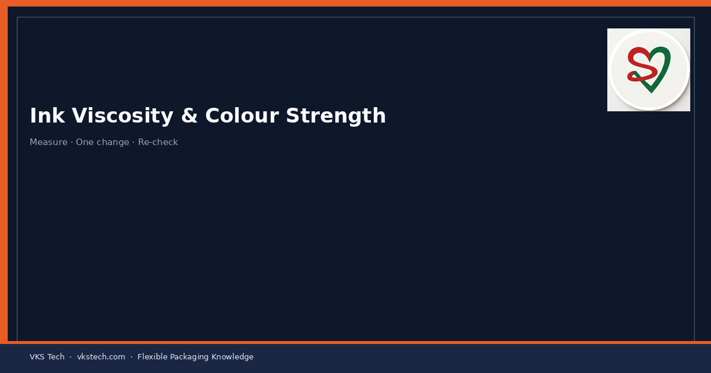
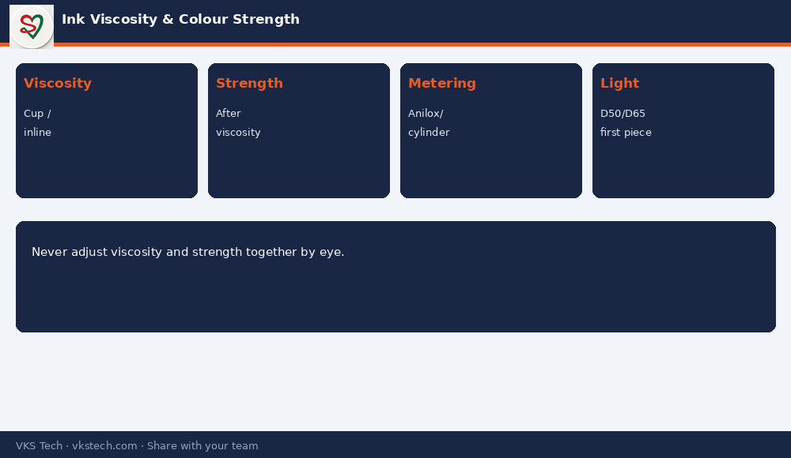

🎨 Colour Drift Mid-Run Is Rarely “Bad Luck”. It Is Usually Viscosity, Strength or Anilox/Cylinder Condition.
📖 10-min read · Ink control · Print quality
Operators often correct colour by “adding a little solvent” or “a little more ink” without measuring. That creates loops of over-correction. Stable colour needs measured viscosity, known strength and clean metering (anilox or cylinder cells).
📌 Controls That Work
- Viscosity cup or in-line reading at defined temperature
- Strength adjustment only after viscosity is in range
- Anilox/cylinder cleanliness before blaming the ink batch
- First-piece under D50/D65, not under random shop light

💡 Rule: Measure → adjust one variable → re-measure. Never adjust viscosity and strength at the same time “by eye”.
🎨 रन के बीच रंग बदलना शायद ही “बुरी किस्मत” हो। आमतौर पर विस्कोसिटी, स्ट्रेंथ या अनिलॉक्स/सिलेंडर की हालत होती है।
📖 10-मिनट पढ़ें · इंक कंट्रोल · प्रिंट क्वालिटी
💡 नियम: मापें → एक वेरिएबल बदलें → फिर मापें। आँख से विस्कोसिटी और स्ट्रेंथ एक साथ न बदलें।